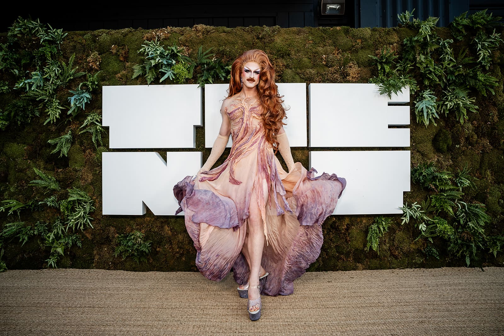
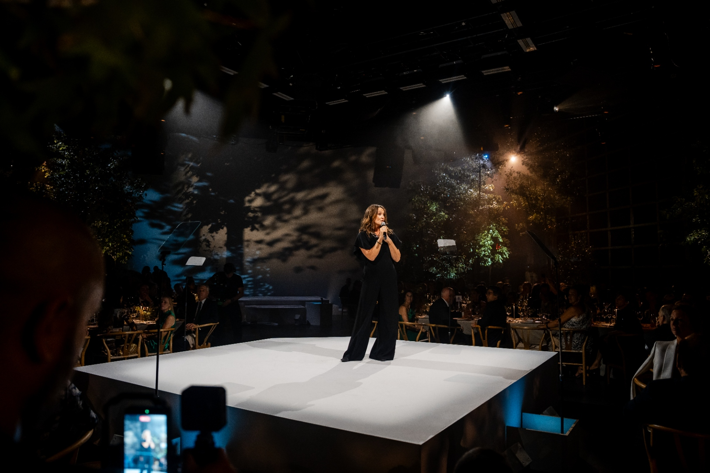
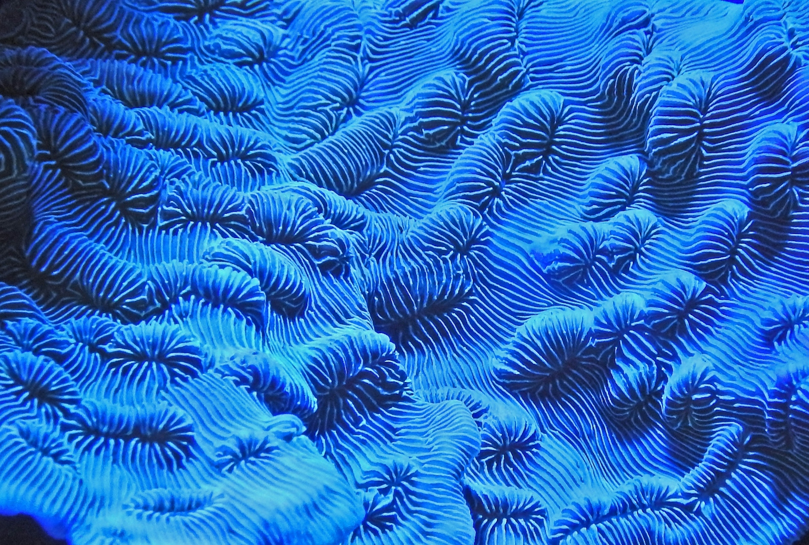
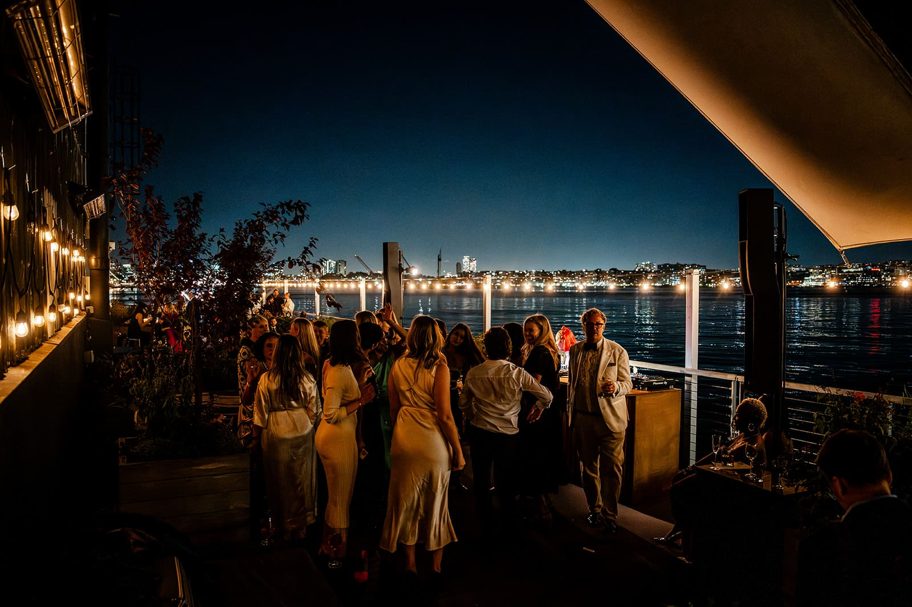

New York · On the Eve of Climate Week and UNGA
THE NAT GALA — a celebration of the awe and wonder of the natural world
New York · Sept 2025


This Time Last Year
On September 21 in New York City, THE NAT GALA made its unforgettable debut — a celebration of the awe and wonder of the natural world, and a tribute to the trailblazers accelerating change for our planet's future. Together, we honoured visionaries, innovators, and champions of nature who are shaping a more sustainable and thriving world.

Watch the Recap
Relive the night in two minutes.
THE NAT GALA
THE NAT GALA · 09.20.26
Water Is Life
From glacier melt to ocean tides, water connects every act of survival on this planet — this year, THE NAT turns its full lens on the element that gives us all life.
Footage · THE NAT
Related Events
THE NAT movement is expanding — see where we're headed next on the 2026 Roadmap.

Roundtable II: Data Centres for a Nature-Positive Future
New York

Photography — Joe Short · GALA photography courtesy of THE NAT